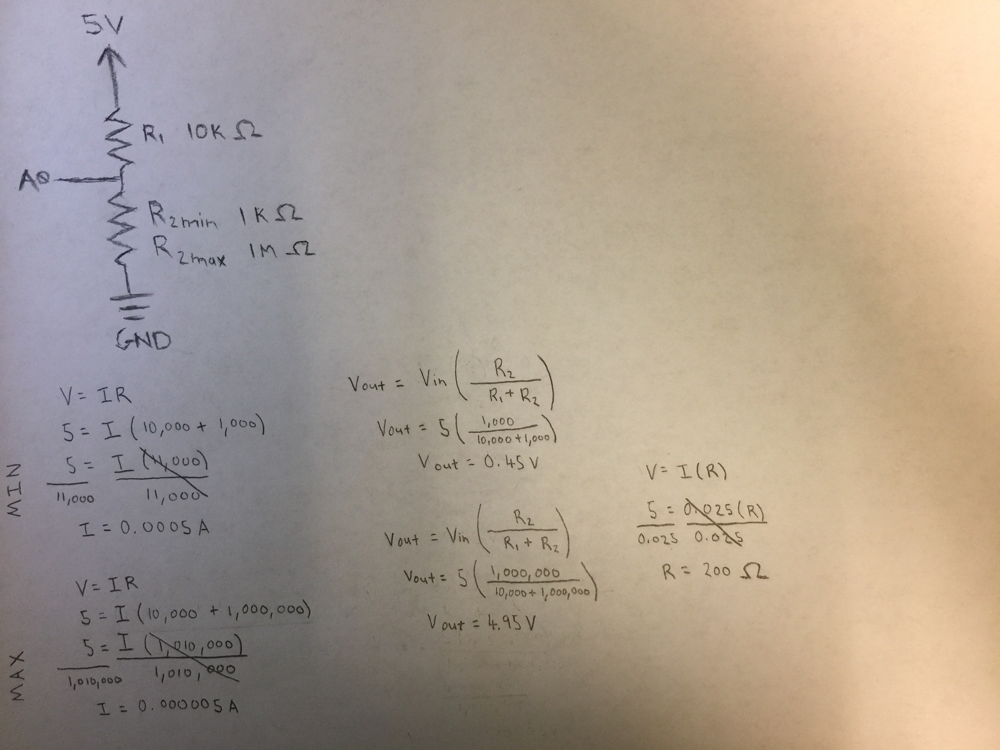
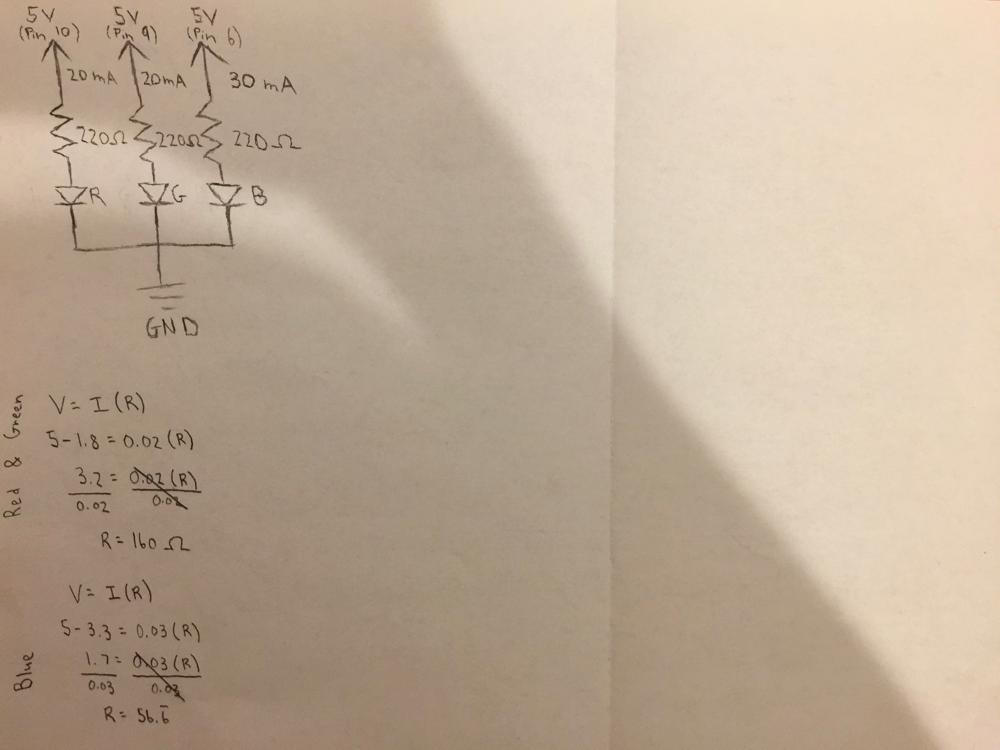
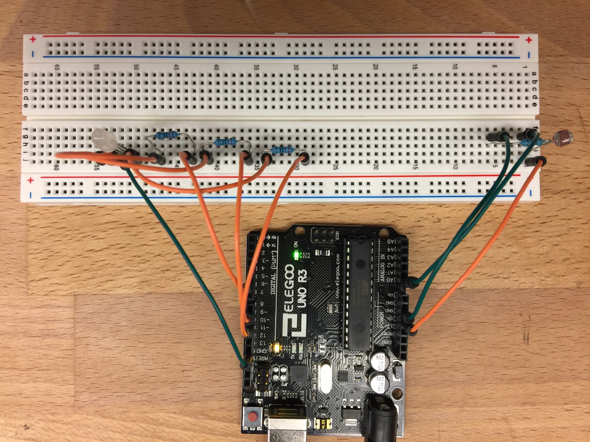

Steven Yong's Assignment 3!
Schematic
 I instinctually attempted to hunt down the datasheet for the photoresistors provided in the kit, but apparently most photoresistors look alike but vary by max ohms by quite a bit. I went to Kartika for clarification and she suggested a page that I found helpful; it stated that photoresistors can go from 1K ohms to 1M ohms. However, there was a chart showing that some can go even higher to 10M ohms. I decided to use 1K as the min and 1M as the max for the calculations. The reading also suggested a 10K ohm resistor for ambient light like dark rooms (10 lux). Using 10K ohms, I calculated the voltage in for both the min and max resistance of the photoresistor.
Circuit
The circuit was pretty easy this week. The hardest part was understanding the photoresistor section. However, I did make two silly mistakes by not plugging the wires into the right place because I was rushing through it. It's weird how this time I already knew what to do and envisioned what the circuit would look like before even touching any of the components.
Firmware
const int photoresistorPin = A0; //Give pin 11 the variable name photoresistorPin.
const int redPin = 10; //Give pin 10 the variable name redPin.
const int greenPin = 9; //Give pin 9 the variable name greenPin.
const int bluePin = 6; //Give pin 6 the variable name bluePin.
void setup() {
pinMode(photoresistorPin, INPUT); //Set photoresistorPin as an input.
pinMode(redPin, OUTPUT); //Set redPin as an output.
pinMode(greenPin, OUTPUT); //Set greenPin as an output.
pinMode(bluePin, OUTPUT); //Set bluePin as an output.
Serial.begin(9600); //Initialize the serial monitor by set the sampling rate to 9600 bits per second.
}
int photoresistorValue = 0; //Set up a variable called photoresistorValue to pass values from the photoresistor to.
int processedValue = 0; //Set up a variable called processedValue to pass values from the map function to.
void loop() {
photoresistorValue = analogRead(photoresistorPin); //Assign the value given by the photoresistor and give it the variable name photoresistorValue.
processedValue = map(photoresistorValue, 0, 1023, 0, 255); //Use the map function to process the values from the photoresistor to 8-bit (0 to 255).
Serial.print("The photoresistor value is: "); //Print the label for photoresistor values in the serial monitor.
Serial.print(photoresistorValue); //Print the photoresistor value in the serial monitor.
Serial.print("\t The processed value is: "); //Print the label for the processed values in the serial monitor.
Serial.println(processedValue); //Print the processed value in the serial monitor.
if (processedValue < 100) { //If the lights are off, then execute the following for loop.
for (int rgbFade = 0; rgbFade < 255; rgbFade++) { //A for loop counting up by 1 from 0 and ending at 255 (for 8-bit RGB).
analogWrite(redPin, rgbFade); //Select redPin and fade in red using the values provided by the for loop.
analogWrite(bluePin, 255 - rgbFade); //Select bluePin and fade out blue by subtracting the values provided by the for loop from 255.
delay(5); //Delay by 5 millseconds.
}
for (int rgbFade = 0; rgbFade < 255; rgbFade++) { //A for loop counting up by 1 from 0 and ending at 255 (for 8-bit RGB).
analogWrite(greenPin, rgbFade); //Select greenPin and fade in green using the values provided by the for loop.
analogWrite(redPin, 255 - rgbFade); //Select redPin and fade out red by subtracting the values provided by the for loop from 255.
delay(5); //Delay by 5 millseconds.
}
for (int rgbFade = 0; rgbFade < 255; rgbFade++) { //A for loop counting up by 1 from 0 and ending at 255 (for 8-bit RGB).
analogWrite(bluePin, rgbFade); //Select bluePin and fade in blue using the values provided by the for loop.
analogWrite(greenPin, 255 - rgbFade); //Select greenPin and fade out green by subtracting the values provided by the for loop from 255.
delay(5); //Delay by 5 millseconds.
}
}
else { //If the lights are on, then execute the following code.
digitalWrite(redPin, LOW); //Set redPin to LOW (off).
digitalWrite(greenPin, LOW); //Set greenPin to LOW (off).
digitalWrite(bluePin, LOW); //Set bluePin to LOW (off).
}
}
In terms of coding, the map function and serial monitoring were novel concepts; not super hard, but I had to sit there and figure out where they fit into the draft code I had written for the photoresistor and LED. Also calling upon last week's code, I subtracted using the for loop to fade out the colors while fading in the other.
Circuit's Operation

Pretty happy with this week's result. It came out exactly as I had imagined. Nitpicking though, it would have been nice if I figured out how to make it check the brightness more often, instead of just at the beginning of the for loop.